The JD puts social at the centre — friend interactions, sharing, Story, DMs. And it does feel like the moment for social to carry retention.
What I can see · How I’d break it down · A small social product I shaped on my own with AI
OK, so with the last bit of time, I want to share a few notes on TikTok social, and show you a small social product I made myself.
Because when I read the JD — even though the team is Local Services — it mentions a lot of friends, interactions, sharing, Story and DMs. And I do think social really matters right now. It’s one of the ways you lift retention, and I know Douyin has done this really well.
I’ve never worked inside TikTok, so this is really just some early observations and thinking from a user’s point of view. If I get anything wrong, feel free to tell me.
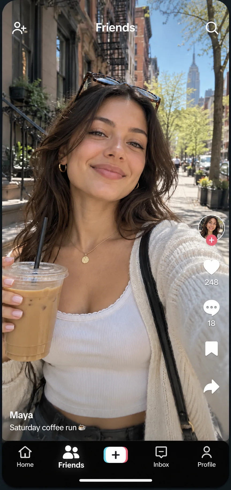
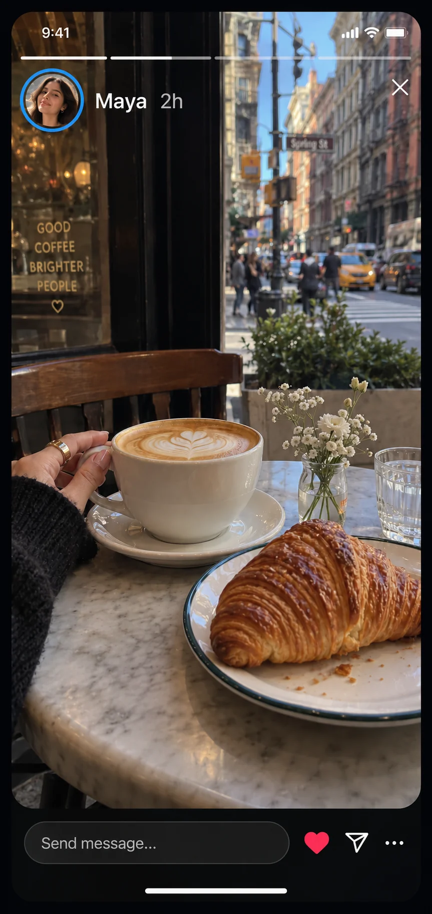
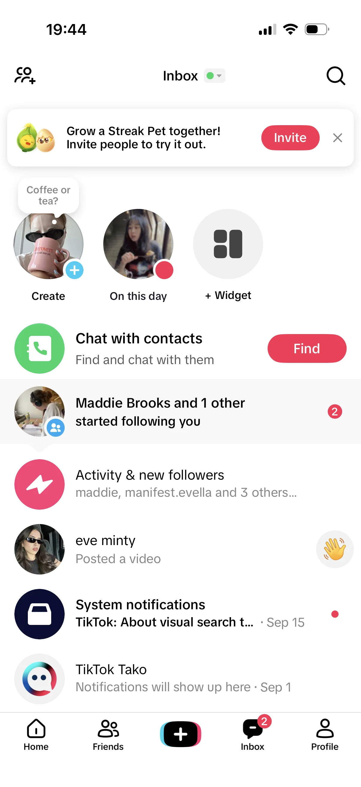
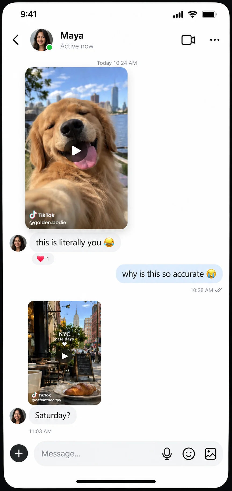
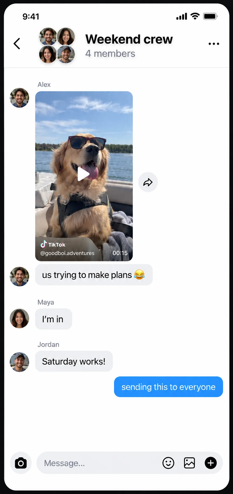
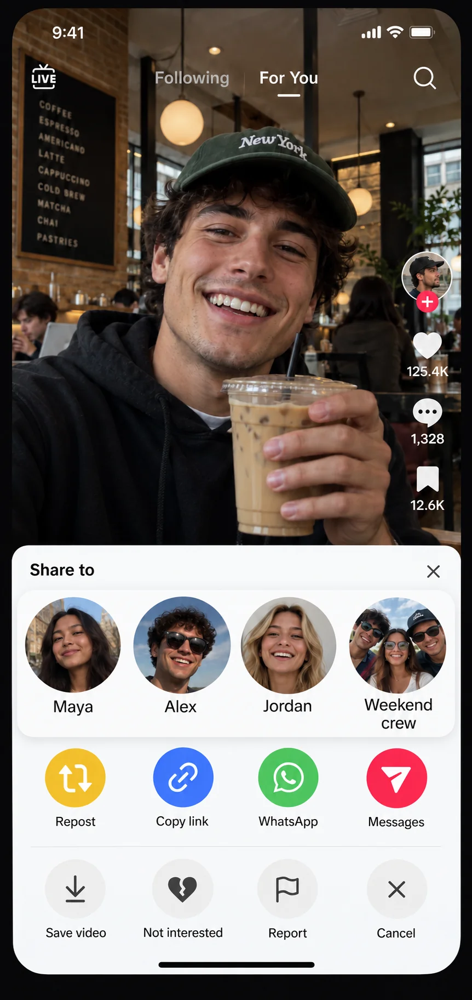
I spent some time in the product, so this is just what I could see as a user. Six places social shows up for me: the Friends tab, Story, the inbox, a DM thread, a group chat, and the share sheet.
And inside the inbox there’s a streak pet, a widget, create memories, find your contacts. I can tell the team is trying a lot of things to make TikTok more social.
What matters most: get them connected to people they actually know.
What matters most: make the first hello cost nothing.
What matters most: keep the conversation here, and turn it into a habit.
So I’d look at it as three scenarios, and each one is a different job.
So the first scenario is a user who is on TikTok, but hasn’t connected with the friends who are also here — or maybe their friends aren’t on TikTok at all. What matters most in this one is helping them find those people. And TikTok already does quite a lot for it: contacts sync, suggested friends, invite links.
The second scenario is when your friends are already here, but nothing really happens between you. What matters in this one is making the first hello cost nothing.
And there’s something here I really like. When you add someone and open the chat, there’s a big wave sticker, so one tap and you’ve said hi — you don’t have to type anything. I think that’s a really good move.
And the third scenario is when they do send things to each other, but the conversation ends up somewhere else. So the job here is to make that conversation happen inside TikTok.
And to me that means talking about a TikTok should simply feel better here than anywhere else, because the video just plays right there.
A light, always-on link between two people who live far apart.
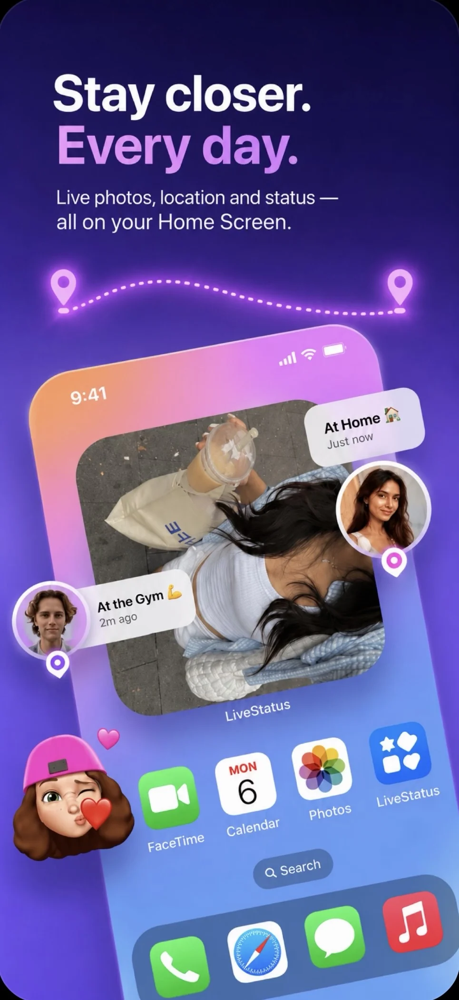
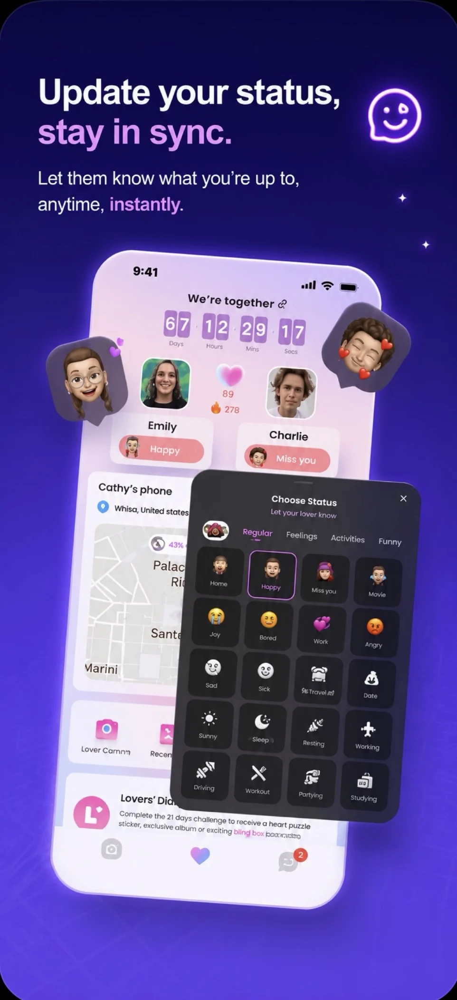
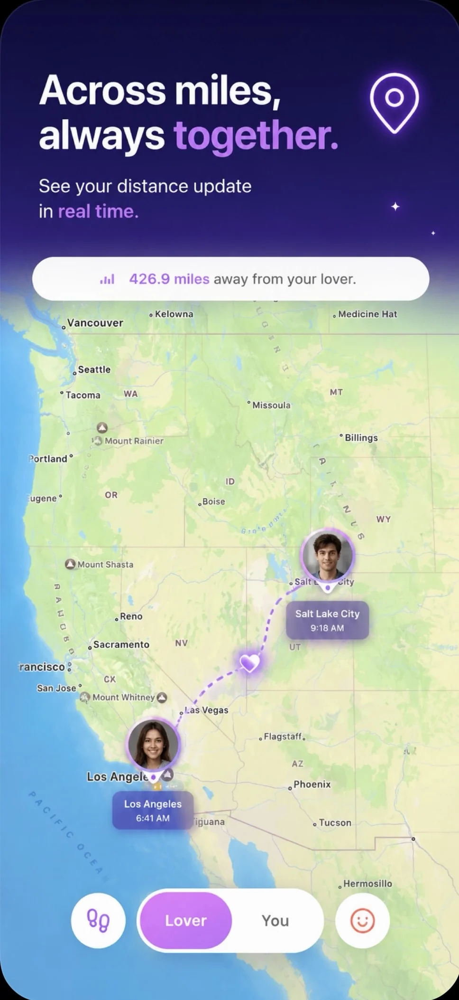
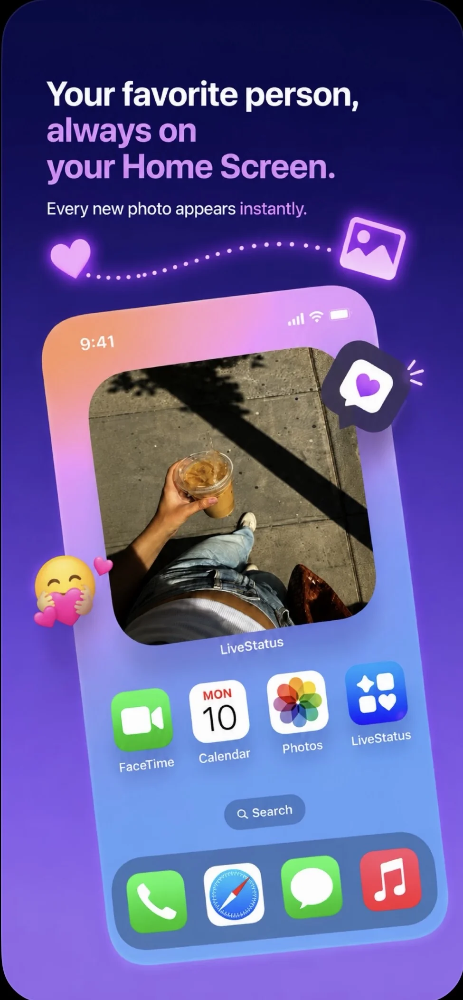
So the last thing I want to show you is a small app I just created with AI, called LiveStatus.
It’s a lightweight way for best friends or couples to stay connected.
Chatting already happens somewhere else, and chatting is heavy. For two people living apart, the hard part isn’t talking — it’s feeling that you’re still in each other’s life.
Instead of a conversation, share a moment. Two photos stack into one frame of the two of you.
All the design on my own, with Claude Code — three weeks from nothing to shipped.
The reason I made this is pretty simple. Chatting already happens somewhere else, and chatting is kind of heavy.
For two people living apart, I think the hardest part isn’t the talking. It’s the feeling that you’re still connected — that you’re still in each other’s life, still there for each other. And that comes from seeing little pieces of their day.
So instead of starting a conversation, you just casually share a moment, and the two photos stack into one frame of the two of you.
And what I like about it is that once you can feel someone’s day, the conversation actually happens more.
I did all the design on my own with Claude Code, then worked with one backend developer and shipped it on the App Store. Three weeks in total.
Shoot, and your photo stacks with theirs into one moment.
Every moment you two made, kept in one place.
Their moment on your home screen. Nothing to open.
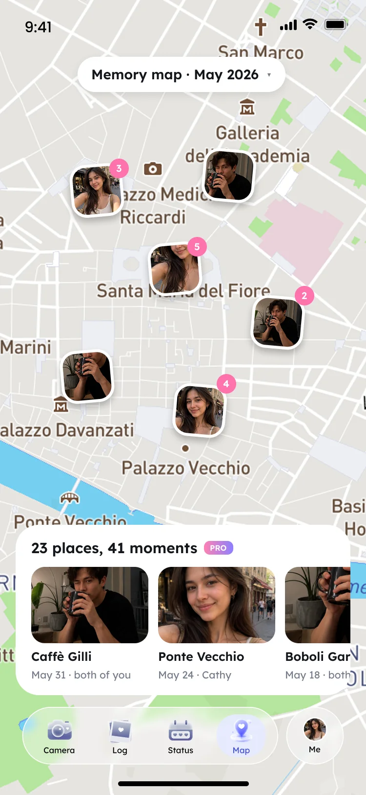
Where they are, and an excuse to say something.
Notifications, DMs, a little heart — what gets the first move out of someone.
The way it works is pretty simple. The two of you shoot these little moments whenever you want. They get logged in the app, and they show up on each other’s home screen widget.
If you pay, you can also save the two of you merged into one moment each day, so you can share it and keep it. And you can see your memories on the map — where the two of you were, day by day.
These days vibe coding makes it easy to build a product, but very few of them ever make money. So I thought about the business early, and here it’s pretty clear.
A small attempt of my own in social — and a coincidence that it’s what this role is about, which is why I wanted to show it.
Where it is now: it’s only just shipped, so the numbers are small. The first MVP is on the App Store, it’s making some money, and paid acquisition is breaking even — which means we can keep buying users while we figure things out. What’s still open is which of those four features is the one worth betting on.
This is really just a small attempt of my own in social. It’s a bit of a coincidence that it turned out to be what this role is about — so I thought I’d share it.
Thank you for listening this far. I’m genuinely interested in this team and in the problems it’s working on — and I’d love to be a colleague here, and keep building what social could still be.
That’s everything — thank you for listening this far.
I’m genuinely interested in this team and in the problems you’re working on, and I’d really like to be a colleague here and keep exploring what social can still be. Happy to take any questions.